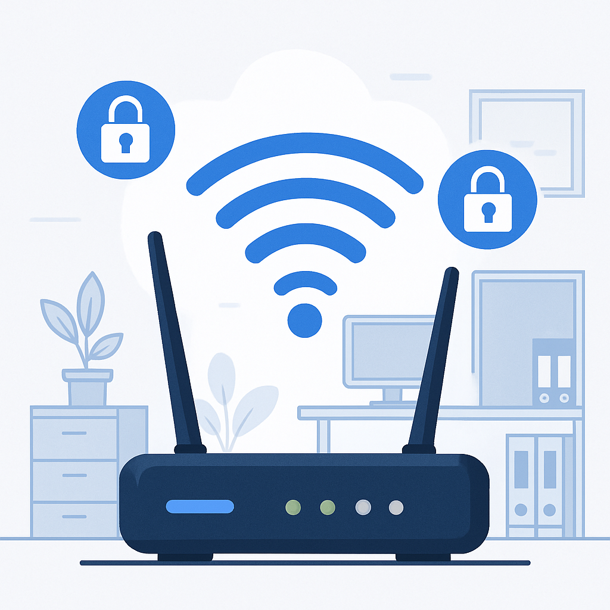

Monitoramento de Redes Wi-Fi e Segurança Digital para Pequenas Empresas
A segurança digital é um dos pilares para o sucesso e a continuidade dos negócios, especialmente para pequenas empresas que, muitas vezes, não contam com equipes dedicadas de TI. Um dos pontos mais crÃticos é o controle e o monitoramento das redes Wi-Fi, já que acessos não autorizados podem comprometer dados sensÃveis e a integridade dos sistemas.
Boas práticas de segurança digital
- Troque as senhas do Wi-Fi regularmente: Evite o uso prolongado da mesma senha e prefira combinações longas, com letras, números e sÃmbolos.
- Use senhas fortes e diferentes para cada rede: Não reutilize senhas e evite informações óbvias, como nomes da empresa ou datas de aniversário.
- Monitore os dispositivos conectados: Verifique periodicamente quais dispositivos estão conectados ao seu Wi-Fi e desconecte os desconhecidos.
- Mantenha sistemas e aplicativos sempre atualizados: Atualizações corrigem falhas de segurança e reduzem riscos de invasão.
- Ative o firewall do roteador e dos computadores: O firewall é uma barreira extra contra acessos não autorizados.
- Desative o WPS do roteador: O WPS pode facilitar ataques de força bruta. Prefira métodos tradicionais de autenticação.
- Utilize autenticação WPA2 ou WPA3: Evite padrões antigos como WEP, que são facilmente quebrados.
- Faça backup regular dos dados: Tenha cópias de segurança em local seguro, preferencialmente fora do ambiente fÃsico da empresa.
- Eduque sua equipe: Promova treinamentos e orientações sobre golpes digitais, phishing e boas práticas de navegação.
- Restrinja o acesso à rede: Crie uma rede separada para visitantes e limite o acesso de dispositivos pessoais à rede principal da empresa.
Adotar boas práticas de segurança digital é essencial para proteger informações sensÃveis, evitar prejuÃzos e garantir a continuidade das operações, mesmo em pequenas empresas. Com medidas simples e atenção constante, é possÃvel reduzir significativamente os riscos e fortalecer a confiança de clientes e parceiros.
Monitoramento e Auditoria de Redes Wi-Fi
O monitoramento e a auditoria das redes Wi-Fi são fundamentais para identificar acessos não autorizados e garantir a segurança dos dados. Pequenas empresas podem implementar soluções simples, como scripts em Python, para listar redes Wi-Fi salvas e monitorar conexões de rede em tempo real.
- get_wi_fi.py: Lista todas as redes Wi-Fi salvas e suas senhas no computador.
- monitor_exe.py: Monitora conexões de rede dos processos em execução, destacando portas sensÃveis e gerando relatórios.
Exemplos de scripts citados:
get_wi_fi.py
|
monitor_exe.py
Investir em boas práticas e buscar soluções, mesmo que simples, pode fazer toda a diferença para a proteção dos dados e a continuidade das operações da sua empresa.